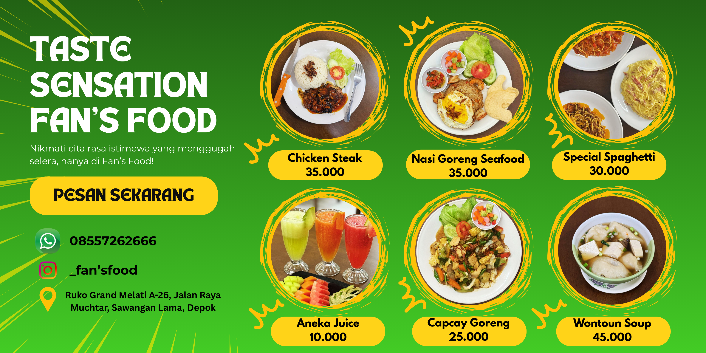
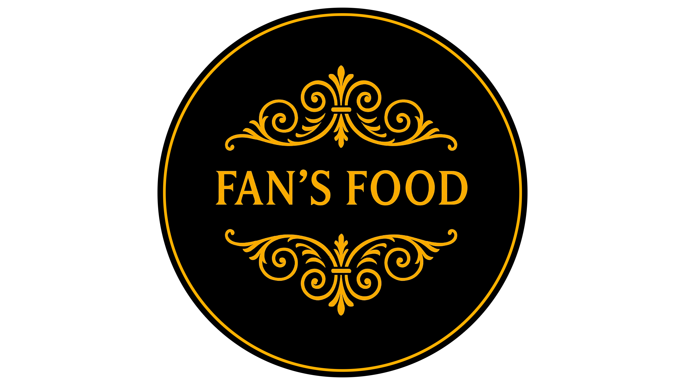
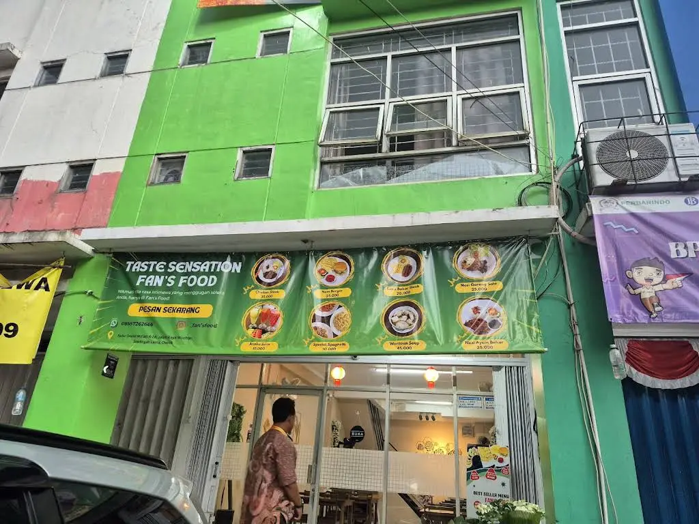

Hello, It's Me
Muhamad Arya Darmawan
And I'm
I am a student of Informatics Engineering, Indraprasta University.
More About MeI am a student of Informatics Engineering, Indraprasta University.
More About MeHalo! Salam hangat, saya adalah mahasiswa semester tiga Teknik Informatika di Universitas Indraprasta, didorong oleh minat yang mendalam terhadap teknologi dan pemrograman. Dengan dasar yang kuat di bidang ini, saya ingin terus berkembang dan menyempurnakan keterampilan saya, selalu mencari peluang untuk belajar, beradaptasi, dan menghadapi tantangan baru. Ambisi saya adalah memberikan kontribusi yang bermakna pada lanskap teknologi yang terus berkembang, terutama di bidang pengembangan perangkat lunak, database, AI, keamanan siber, dan sektor dinamis lainnya dalam dunia industri. Di era digital ini, di mana teknologi membentuk hampir setiap aspek kehidupan kita, menguasai keterampilan ini menjadi sangat penting. Saya berkomitmen untuk tetap berada di garis depan kemajuan teknologi, dengan tujuan menjadi aset berharga bagi dunia digital, di mana inovasi dan kemampuan beradaptasi adalah pendorong utama kesuksesan.
Berikut kemampuan yang sudah saya pelajari sejauh ini
Berikut kemampuan interpersonal yang saya kembangkan sejauh ini
Berikut adalah beberapa sertifikat yang telah saya peroleh dalam perjalanan belajar saya
Diberikan oleh Universitas Indraprasta PGRI sebagai pengakuan atas partisipasi dalam kegiatan pengembangan prestasi nasional.
Diberikan atas keberhasilannya menyelesaikan kelas Belajar Dasar AI dari Dicoding Indonesia. Sertifikat ini menandakan penguasaan kompetensi dasar dalam bidang kecerdasan buatan, dan berlaku hingga 7 November 2028. Ditandatangani oleh Narenda Wicaksono, CEO Dicoding Indonesia, sebagai bentuk pengakuan resmi atas pencapaian tersebut.
Beberapa project terbaik yang pernah saya kerjakan
Melalui program MKWK pada semester 1, saya bersama tim merancang dan meluncurkan website resmi untuk Masjid At-Taqwa Poltangan, Jakarta Selatan. Proyek ini dibangun dengan fokus pada antarmuka (UI/UX) yang modern, responsif, dan ramah pengguna. Website ini tidak hanya mendigitalisasi informasi jadwal ibadah dan kajian rutin, tetapi juga mengintegrasikan layanan sosial keagamaan guna memperluas jangkauan komunitas di era digital.





Sebagai mahasiswa semester 2, saya aktif mencari pengalaman nyata di dunia kerja. Salah satu pengalaman berharga saya adalah proyek sebagai Graphic Designer di restoran Fan's Food. Di sini, saya tidak hanya merancang materi visual, tetapi juga memahami alur kerja dan dinamika industri kuliner. Meskipun di luar bidang studi utama, pengalaman ini memperluas perspektif kreatif, melatih berpikir visual, dan meningkatkan kemampuan kolaborasi tim.
Selamat datang di era kebebasan finansial. Ichiwallet hadir bukan sekadar sebagai alat pembayaran, melainkan sebagai ekosistem keuangan personal yang menyatukan kecanggihan teknologi dengan kemudahan penggunaan dalam satu genggaman yang elegan. Dirancang untuk mendukung gaya modern, menghadirkan transaksi yang praktis, aman, dan efisien dalam setiap aktivitas. Satu Genggaman, Ribuan Kemudahan.
Dalam proyek ini, saya bertanggung jawab merancang desain visual untuk produk pakaian. Fokus utama saya adalah membuat desain yang rapi, menarik, dan sesuai dengan karakter yang diinginkan klien. Pengalaman ini melatih saya untuk menyesuaikan komposisi warna dan tata letak grafis agar tidak hanya bagus di layar komputer, tetapi juga proporsional saat diaplikasikan pada kain.
"Barang siapa yang ingin dilapangkan rezekinya dan dipanjangkan umurnya, maka hendaklah ia menyambung tali silaturahmi."
(Hadis riwayat Bukhari dan Muslim)
Ini bukan akhir, melainkan sebuah awal. Terima kasih atas kesempatan untuk menunjukkan potensi saya, dan semoga kita bisa berkolaborasi di masa depan.